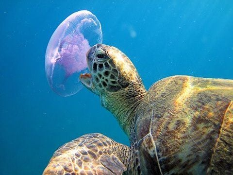
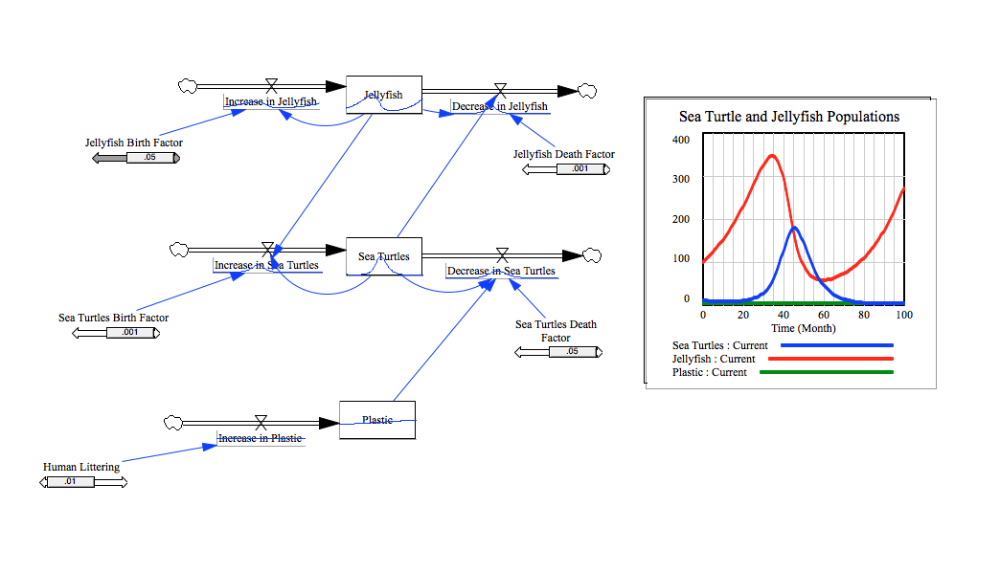

Jellyfish and Sea Turtles Model
Overview

Link to HLD
Model Description
This project models the sea life of sea turtles and jellyfish. Two versions of the project were created; the first uses AgentCubes, and the second uses Vensim.
The Story
If a jellyfish (pink square) is next to one or more sea turtles (green square), then there is a percent chance, (simulation property, EATEN_PCT_CHANCE) that the jellyfish will be eaten by the sea turtle. If a jellyfish is next to one or more jellyfish, there is a percent chance, (simulation property, JELLYFISH_REPRODUCTION) that a new jellyfish will be born. If a sea turtle is next to one or more sea turtles, there is a percent chance, (simulation property, SEATURTLE_REPRODUCTION) that a new sea turtle will be born. If a sea turtle is next to one or more plastic items (grey square), then there is a percent chance, (simulation property, DEATH_PCT_CHANCE) that the sea turtle will die or disappear from the ocean. There is a percent chance, (simulation property, PLASTIC_WASTE_ACCUMULATION) that another plastic will appear in the ocean. There is a percent chance, (simulation property, PLASTIC_PICK_UP) that the plastic will be "picked up" by a sea turtle protection organization, or humans, which want to clean the environment. This will cause the plastic to disappear from the ocean. There is a percent chance, (simulation property, ASEXUAL\_REPRODUCTION) that a new jellyfish will be born. There is a percent chance, (simulation property, DEPENDANT\_TURTLE\_DECREASE) that the turtle population will decrease if the jellyfish population is less than one. This is because the sea turtle is dependant on the jellyfish population for food, and if the jellyfish population decreases, so will the sea turtle population. There is a percent chance, (simulation property, DEPENDANT\_TURTLE\_INCREASE) that the turtle population will increase if the jellyfish population is equal to or more than seven and the sea turtle population is less than or equal to five. This is because the sea turtle population is dependant on the jellyfish population. If the jellyfish population increases, or becomes very high, there would be more jellyfish for the sea turtles to eat, causing the sea turtle population to also rise. Plastic moves randomly in the ocean. Jellyfish moves randomly in the ocean. Sea turtles move towards jellyfish. A counter (purple square) counts the number of sea turtles, jellyfish, and plastic there are in the ocean, and graphs the population sizes. To change any of the simulation properties, click the gear button at the top left part of the screen. Then, in the menu that appears, click show simulation properties. In the simulation dialog box, you can change any values and you can see what are the properties, in which affect the model.
Observed Behaviors
In the models, jellyfish and sea turtles swim in the ocean. Sea turtles try to look for jellyfish, but sometimes, accidentally eat plastic instead. If they do eat the plastic or they come in contact with it, there is a percent chance that they will die. Also, jellyfish can give birth to more jellyfish, when they come in contact with another jellyfish. In the same way, sea turtles can give birth to more sea turtles, when they interact with other sea turtles. These models show how both populations depend on each other, and affect each other in many ways. In the graph, you can see that one population would rise, while the other would fall, and the opposite would also later occur. The other population would start to rise, while the first population would fall. For example, if the sea turtle population rose, then this would cause the jellyfish population to decrease. Eventually, the sea turtle population would compete with each other for food (jellyfish), and their population would decrease, because of natural selection. When the sea turtle population decreased, the jellyfish population would increase again, because of lack of predators. This would cycle, with both populations going up and down. In the models, the jellyfish and plastic bags, would move randomly in the world, while the sea turtles would hunt for them (jellyfish). Like in the real world, sea turtles may mistakenly eat a plastic bag, thinking it was jellyfish, since they both look very similar to each other. In addition, in this model, there is a percent chance that more plastic will appears in the ocean.
Agent Cubes Model
Link to Agent Cubes Model
How to Open
To open and use the model you only need to click on the line above: "Link to Agent Cubes Model". The software needed to open the model is AgentCubes.
How to Run
Once the model is opened, to run the model, click the run simulation button, located at the top-left of the screen. The run simulation button has an arrow on top. After you click play, the model will automatically start and run until it finishes. You can click the back arrow at the top of the screen to get back to the Play, Design, Edit page. In addition, you can even change how fast or slow the model runs. To do this, just slide the slider bar, located on the top-right of the screen. You can also click the stop, and step simulation buttons to control and run the model. Another option is to reload the world, which makes the world load back to its normal form.
How to Change Parameters
To change any of the parameters or simulation properties, click the gear button at the top-left part of the screen. Then, in the menu that appears, click show simulation properties. In the simulation dialog box, you can change any values and you can see what are the properties, in which affect the model.
Observation Using Different Scales
Some observations I had were that on a smaller world, similar results occurred but on a smaller scale. Also, analyzing the graph, I saw that the motions of the populations were more drastic, and went up and down a lot, but like in the bigger world, they both ended up dying at the end and they also showed the relation between both populations, and how if one population rises the other falls.
Pushing the Limits
To push the limits I added two different types of reproduction for the jellyfish: sexual and asexual reproduction. This made my model more realistic, because like real jellyfish, the ones in my model also could reproduce both ways. This was tricky to do at first, but after a couple tries it finally worked! I added a simulation property, so my users can easily change the values of how much or how little they want the rate of asexual reproduction to go. I also had to push the limits by changing my model so it would stop when not only one of my agent populations died (either sea turtles or jellyfish), but instead both populations. This was tricky to do because of course when one population died off the other population would increase and continue to increase. After many edits I was able to add simulation properties in which allowed one population to fall, after the other population was really low, and it allowed one population to rise, if under certain conditions.
What I Learned by Adjusting Parameters
I learned that when you adjust your parameters by a little bit, it can make a big difference. For example, when I tried adjusting the sea turtle reproduction simulation property, by .5, it made the difference between having the population rise or fall. Also, I learned by adding different simulation properties and adjusting other ones can help the graph not go too high and like in the real world, make the populations go up and down. As one population rises, the other falls.
Screenshots
In this screen shot, it shows the model before it has ran.
This screen shot, shows the model after it ran. You can observe that both population affect each other, and when one population rises, the other falls. For example, if there were a lot of sea turtles, then they would be competing and fighting for food (jellyfish), this will cause the jellyfish population to decrease over time. After a while, when the jellyfish population dropped, the sea turtle population would also start to decrease, because of lack of food. Once the sea turtle population decreased, again, the jellyfish population would increase, as the predators decreased. This would cause the populations to keep on rising and falling one after the other. This is demonstrated in this graph, showing as one population falls, the other rises.
Vensim Model
Link to Vensim Model
How to Open and Run Vensim
To open this system model, you need to have Vensim downloaded on your computer. You can download Vensim, by going to: http://vensim.com/free-download/. To open this vensim model, click on the "Link to Vensim Model" link above. In Vensim, click the SyntheSim button in the top-center part of the screen. The button is a small gray box with a green arrow on it. In the SyntheSim mode, you can change the parameters of factors, like a sea turtles birth or death rate, a jellyfish birth or death rate, human littering factors, and much more. Changing these parameters allow you to see how they influence the sea turtles and jellyfish populations. The quantities of sea turtles, jellyfish, and plastic bags are shown on a graph to the right side of the screen. The graph will change as you change the parameters of the factors.
How to Change Vensim Parameters
To change the parameters, drag the bar below each factor in the model. Like stated above, this will affect the graph displayed to the right of the screen.
Pushing the Limits
To push the limits I added the plastic variable to the model. This contributed to the death or decrease of sea turtles, which also affected the other population. This was really cool because like the real world it demonstrated that sea turtles really accidentally eat plastic, mistaking it for jellyfish.
What I Learned by Adjusting Parameters
I learned that each factor can make a big difference and impact all populations. I also was able to see how it may be in real life with one factor impacting others whether in positive or negative ways.
Vensim Screenshot
This screenshot, shows my Vensim Sea Life model. By looking at the graph to the side of the model, you can see that both populations affect each other in many ways. Also, their populations cycles, going up and down. In other words, sea turtles and jellyfish both depend on each other. For example, if the sea turtles population grows rapidly, this would cause the jellyfish population to decrease, because of too many sea turtles eating the jellyfish. Later, the sea turtle population would compete with each other for food, and their population would decrease. Eventually, the jellyfish population would soon rise, caused by fewer predators eating them. Like stated above, the populations rise and fall one after another.
Conclusions
I learned that two or more populations can greatly affect each other. Like stated before, if the sea turtle population rose, then this would cause the jellyfish population to decrease. Later, competition between many sea turtles will result in the decrease of sea turtles, and the increase of jellyfish. This would cycle continuously, having one population rise, and the other fall. I also learned that many different factors can result in the deaths of different organisms. For example, the plastic bags in these models hurt the sea turtle populations and made them decrease. In research, other factors like starvation, old age, body injury, suffocation, and other things can result in the deaths of organisms.
Citation
Palermo, Elizabeth. “What Do Turtles Eat?” LiveScience, Purch, 12 May 2014, www.livescience.com/45539-what-do-turtles-eat.html.
“Sea Turtle Diet.” SEE Turtles, www.seeturtles.org/sea-turtle-diet/
SeaWorld Parks & Entertainment. “Longevity & Causes of Death.” Animals: Explore. Discover. Connect., seaworld.org/animal-info/animal-infobooks/sea-turtles/longevity-and-causes-of-death.
“How Long Do Sea Turtles Live? And Other Sea Turtles Facts.” WWF, World Wildlife Fund, www.worldwildlife.org/stories/how-long-do-sea-turtles-live-and-other-sea-turtle-facts.
“Information About Sea Turtles: An Introduction – Sea Turtle Conservancy.” Sea Turtle Conservancy, conserveturtles.org/information-about-sea-turtles-an-introduction/.
“What Is the Lifespan of a Turtle?” Turtle Conservation Society, www.turtleconservationsociety.org.my/what-is-the-lifespan-of-a-turtle/.
“Ocean Plastic.” SEE Turtles, www.seeturtles.org/ocean-plastic/.
“Turtles - How You Can Help.” Natureabounds, www.natureabounds.org/turtles_how_you_can_help.html.
“How Do Jellyfish Reproduce? What Effect Does Their Sting Have on Humans? What's the Difference between Red and Translucent Jellyfish?” Scientific American, www.scientificamerican.com/article/how-do-jellyfish-reproduc/.